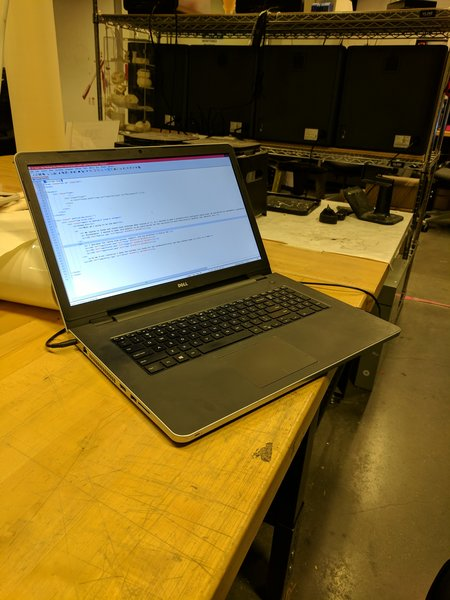
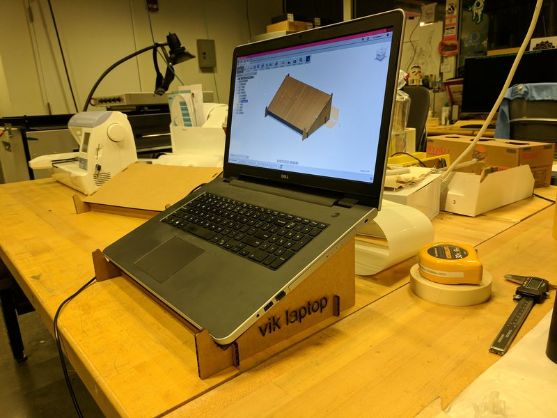

Press kit
What am I going to do and why?
I worked on working on a shoe rack. The image below tells more than 1000 words why I decided to do so.

As I started tackling the project I decided to start playing around with Solidworks and after some head-banging I discover a functionality that made my life easier: mirroring.
I have to thank a good tutorial at lynda.com see here. I debated over whether I should use flexures and the sheet metal option, but perhaps that could have been more than I could chew this first project. So at the end I made up my mind to use a very simple structure with the following pieces


